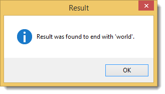

Determines whether the end of this string instance matches the specified string.
OutputVar := instance.EndsWith(str)
OutputVar := instance.EndsWith(str, comparisonType)
Determines whether the end of MfString instance matches str. Case is Ignored
Determines whether the end of MfString instance matches str and uses case rules set by comparisonType
str
MfString instance or a var containing string
comparisonType
One of the MfStringComparison enumeration values that specifies the rules to use in the comparison
Can also be integer var matching an enurmation value of MfStringComparison.
True if value matches the end of this instance; otherwise, false.
Throws MfNullReferenceException if method is run on a non-instance of MfString
Throws MfNotSupportedException if Overloads can not match Parameters.
Throws MfArgumentException if there is an error get a value from a parameter.
Overloads method supports using all vars or all objects. Mixing of vars and Objects is supported for this method.
Variadic Method; This method is Variadic so you may construct an instance of MfParams containing any of the overload method parameters listed above and pass in the MfParams instance to the method instead of using the overloads described above. See MfParams for more information.
mfs := new MfString("Hello World")
if (mfs.EndsWith("world", MfStringComparison.Instance.OrdinalIgnoreCase))
{
MsgBox, 64, Result, Result was found to end with 'world'.
}
; could also be written as
mfs := new MfString("Hello World")
if (mfs.EndsWith("world", 5))
{
MsgBox, 64, Result, Result was found to end with 'world'.
}
The result of running the example are shown in figure 1.
Figure 1:

Variadic Method; This method is Variadic so you may construct an instance of MfParams containing any of the overload method parameters listed above and pass in the MfParams instance to the method instead of using the overloads described above. See MfParams for more information.